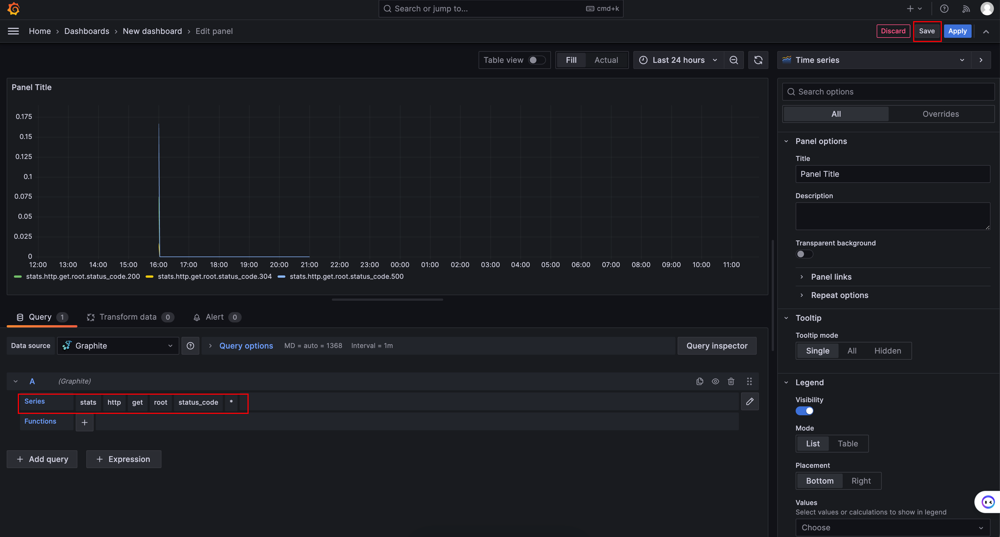

Node.js应用监控
整理Node.js应用监控系统相关内容。
一、背景
为了能够很好定位线上问题，提前预知系统存在的隐患与问题，选择引入应用监控系统APM。
二、APM
1. 概念
Application Performance Management (APM) 是监控服务的一套技术手段，致力于监控并管理程序的性能和可用性。
2. 作用
- 实时采集监控数据：包括硬件、操作系统、中间件、应用程序等各个维度的数据。
- 实时反馈监控状态：通过对采集的数据进行多维度统计和可视化展示，能实时体现监控对象的状态是正常还是异常。
- 预知故障和告警：能够提前预知故障风险，并及时发出告警信息。
- 辅助定位故障：提供故障发生时的各项指标数据，辅助故障分析和定位。
- 辅助性能调优：为性能调优提供数据支持，比如慢 SQL，接口响应时间等。
- 辅助容量规划：为服务器、中间件以及应用集群的容量规划提供数据支撑。
- 辅助自动化运维：为自动扩容或者根据配置的 SLA 进行服务降级等智能运维提供数据支撑。
3. 组成原理
- Agent: 用于上报数据
- Monitor: 用于收集数据
- Dashboard: 用于展示数据
4. APM形态
4.1 服务器性能指标监控
- 对服务依赖的硬件性能进行监控，如CPU、内存、硬盘容量。
- 监控服务器性能指标的实时值，用于出紧急问题时及时报警。
- 监控历史趋势，可以观察每天的访问情况及对异常点进行分析。
4.2 服务监控
- 对提供的服务进行监控。
- 检测服务情况，如请求数，响应数，成功率。
- 监测服务的热点，异常波动。
- 监测服务来源，调用方分布。
4.3 错误异常监控
- 对报错或异常进行监控。
- 一般需要主动上报。
- 需要提供大量上下文信息才有意义，如当时的URL，错误堆栈等。
- 价值与错误信息多少成正比。
4.4 日志收集
- 对服务的所有情况进行记录，日志是必不可少的。
- 日志查询分析困难，所以APM一般都有日志收集和分析能力。
- 占空间，定期清理。
4.5 依赖监控
- 对服务的依赖进行监控，如数据库、缓存、外部服务。
- 几乎所有的响应缓慢的问题均是依赖导致的。
- 依赖监控比较大范围的监控，只能发现问题。
4.6 分布式事务追踪
- 一个服务从发起到完成，要经历的节点。
- 传统的只能监控多个节点无法串联。
- 分布式追踪可以通过一个ID 就可以查询到一次请求的全链路情况。
4.7 代码级监控分析（Profiling）
- 一般利用自动化的代码插桩技术，获取Node.js 进程内方法的调用链路。
- 可以查看调用栈上的总执行时间和每个方法占的百分比。
- 结合 V8 Profiling , 查看可能出现的内存泄漏情况。
三、指标
1. Use Method 概念
- 资源： 应用依赖的硬件资源（CPU、硬盘、内存）
- Utilization（利用率）： 以资源的一个时间段内被使用的百分比。
- Saturation（饱和度）：某个资源排队的数量。
- Errors（误差/错误数）：出现异常的数量。
2. CPU利用率
3. 内存泄露
4. 吞吐量 QPS & TPS
- QPS ： 是一台服务器每秒能够查询的次数，是对一个特定的查询服务器在规定时间内所处理流量多少的衡量标准。
- TPS ： 是一台服务器每秒能够处理事务的次数。
3. 峰值QPS：
每天80%的访问集中在20%的时间里，这20%时间叫做峰值时间。
（总PV数 * 80%） / （每天秒数 * 20% ） = 峰值时间每秒请求数（QPS）
5. RT 、 Concurrency、APDEX
- RT（响应时间）：执行一个请求从开始到最后收到响应数据所花费的总体时间。
- Concurrency（并发数）：是指系统同时能处理的请求数量。
- APDEX：性能指数 ， 性能满意度的量化值。
四、Graphite & Grafana 实践
1. Graphite
是处理可视化和指标数据的优秀开源工具。有强大的查询API 和 相当丰富的插件功能设置。
- 指标采集器 metrics 用于采集数据。
- 监听器 carbon 接受指标采集器收集上来的数据，做聚合计算。
- 存储数据库 whisper 用于存储按照时间序列的数据。
2. Grafana
是一款用Go语言开发的开源数据可视化工具，可以做数据监控和数据统计，带有告警功能，界面美观，定制性强。
3. 实践
- Graphite & Grafana docker-compose.yml 文件
version: "3" services: grafana: image: grafana/grafana ports: - 3000:3000 graphite-statsd: image: graphiteapp/graphite-statsd ports: - 2003-2004:2003-2004 - 2023-2024:2023-2024 - 8125:8125/udp - 8126:8126 - 8080:80 - 测试代码 app.js
const express = require("express"); const app = express(); const expressStatsd = require("express-statsd"); //指标上报工具 app.use(expressStatsd()); function statsd(path) { return function (req, res, next) { var method = req.method || "unknown_method"; req.statsdKey = ["http", method.toLowerCase(), path].join("."); next(); }; } app.get("/", statsd("root"), (req, res) => { if (between(0, 10) > 5) { res.status(500).send(); } res.send("Response from a simple GET API"); }); app.listen(8000, () => { console.log("Node server started on port 8000"); }); function between(min, max) { return Math.floor(Math.random() * (max - min) + min); } - 启动Graphite & Grafana 监控平台 docker-compose up -d
- 启动 app.js node app.js
- 此时访问 http://localhost:8000/ 便会将数据上传至监控平台
4. Grafana配置
- 登陆 grafana （http://localhost:3000/）
默认用户名/密码： admin/admin - Add data source
Connections > Data sources > Add data source > 选择Graphite > 填写URL > Save
- 配置报表
Dashboards > New dashboard > Add visualization > Select data source (Graphite)
配置：Series
保存：save
 - 查看结果
五、总结
引入APM以实现：
- 了解终端用户真实体验。
- 应用架构映射，从监控逆向分析出真实链路。
- 应用事务分析，能从一个唯一的线索找出整条事务或操作。
- 深度应用诊断，精准定位问题。
- 分析与报告，提供实时精准的大数据查询和可视化